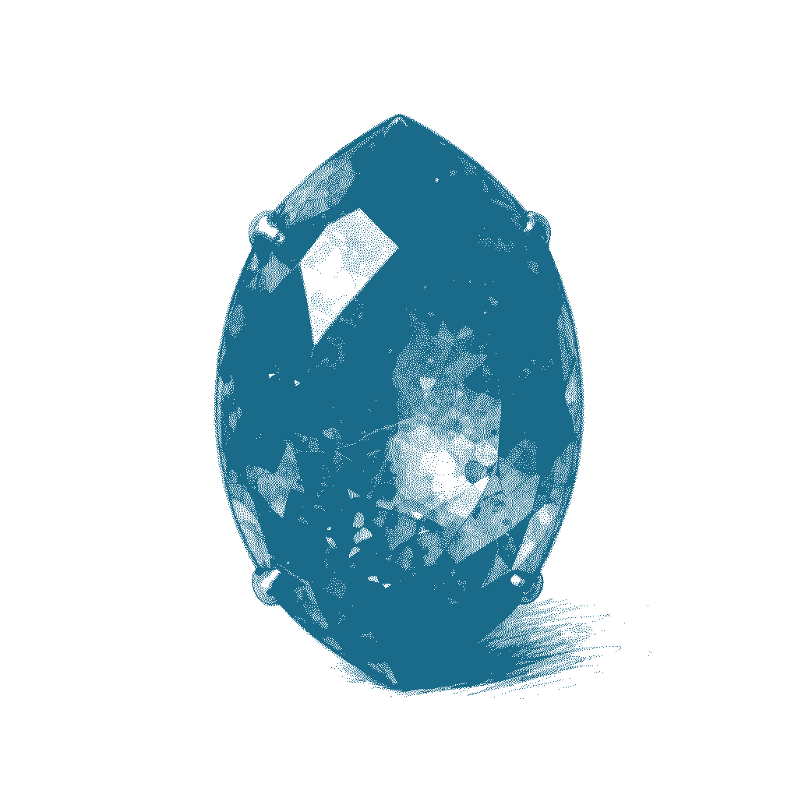
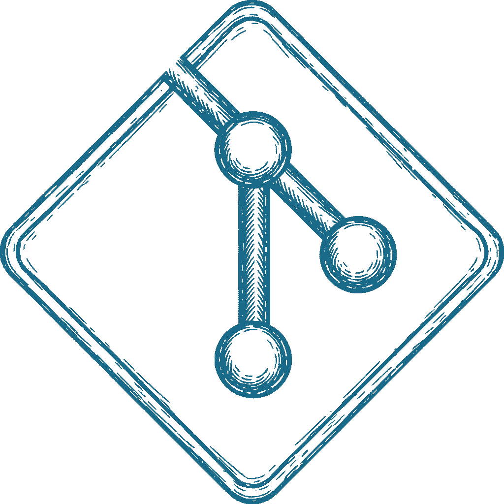

single-binary framework for personal apps with a git data store
You have built a personal app.
Where should you host it? Cloud? Datacenter? Home server? Maybe.
How about git!?
servitor is a system for building and locally hosting apps with the whole data layer being stored in git and automatically synced as you work
There is nothing novel about the tech.
servitor is a single-binary Go app that reads a config file, and serves static frontend content over a socket. For any API call it uses a CGI-like interface to invoke the backend binary (can be Go or anything else)
The backend is responsible for interacting with the data layer, which lives in data/. The data format can be anything, git will eat it. Text is preferred though. JSON, yaml, txt, csv, whatever fits your app. It's your app.
The servitor app automatically commits and pushes changes to git after a period of inactivity, or upon exit, whichever comes first.
There is no elaborate conflict resolution. servitor is intended to be single-player. If you need multi-tenancy, this is not what you're looking for.
That's it!

gitLook, it's the three tiers!
Someone is already taking care of hosting git for you. Depending on your provider, this brings certain durability guarantees.
You get PITR - Point In Time Recovery! For free! Funny!
It's just text, meaning you can look at your data through your git web UI, in a pinch.
The backend design is inspired by CGI, deliberately, to have dual-use as a CLI tool for your agent.
Simple:
# download a template servitor init
After that you take the pre-built template and build your app using your favourite coding method (agents welcome, we got SKILL.mds).
And then:
# host it servitor # hell, put that into systemd! go nuts!
my-app/
├── .servitor.conf
├── frontend/
│ └── index.html
├── backend/
│ └── servitor-backend
├── data/
└── .git/
server:
port: 8080
host: 127.0.0.1
frontend:
path: ./frontend
backend:
path: ./backend/servitor-backend
api_prefix: /api
timeout: 3s
sync:
enabled: true
inactivity_delay: 30s
max_interval: 5m
server:
port: 8080
host: 127.0.0.1
apps:
- name: notes
path: ./apps/notes
- name: wiki
path: ./apps/wiki